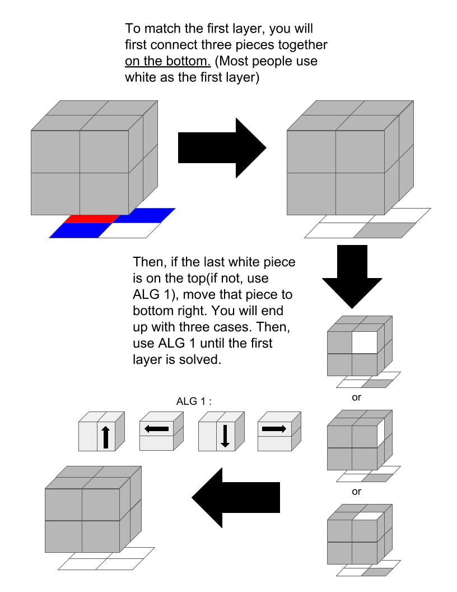
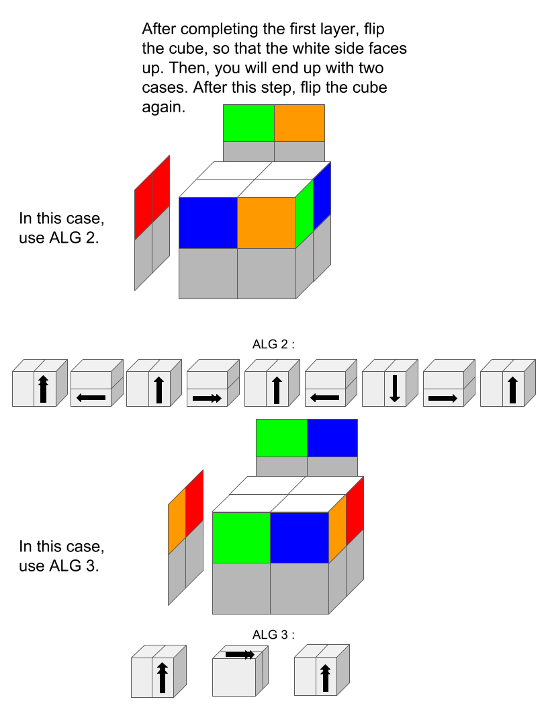
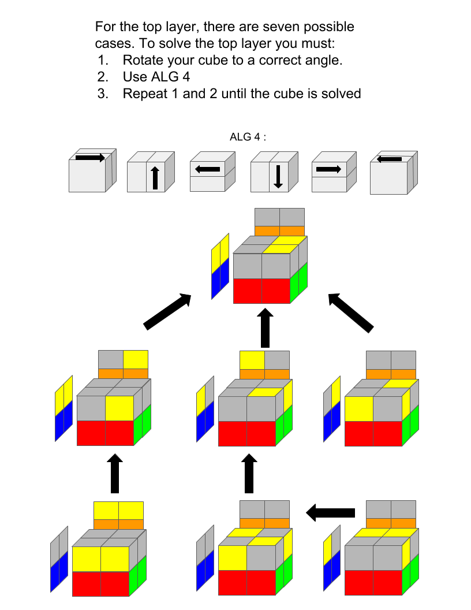
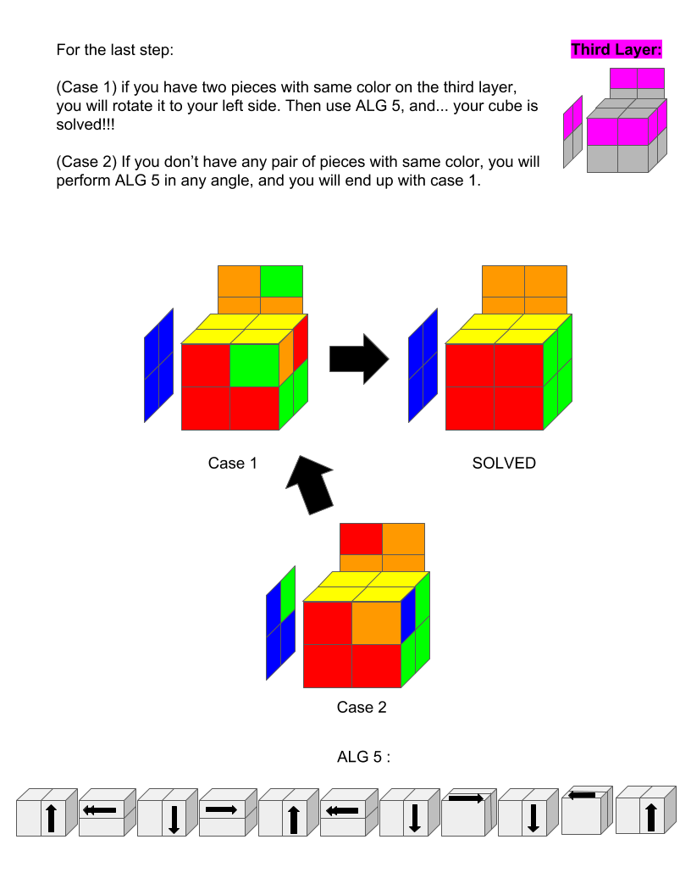

This tutorial is for beginners who had not learned how to solve a 2x2 before. For beginner methods, I didn't use advnanced notations. For all of my tutorials, you need a cube with correct color scheme(yellow, blue, red, green, orange, and white). In images, when a sticker is grey, it means that it can be any color or you don't need to know that color right now. Sometimes, if you are lucky, you will skip a step. When it says, "use ALG#," it means to perform/apply the algorithm on your cube. When you use an algorithm, make sure you are facing the correct angle or the angle shown on the images. To master the beginner method, you must memorize the algorithms and also the angles that the algorithm get performed on.
STEP 1 : SOLVE THE FIRST LAYER

STEP 2 : SOLVE THE SECOND LAYER

STEP 3 : SOLVE THE TOP LAYER

STEP 4 : SOLVE REST OF THE CUBE

Nice job! You solved your rubik's cube! I don't recommend learning the intermediate or advanced method right away. But, I strongly recommend practicing a lot and reading the "tips" section of this website.